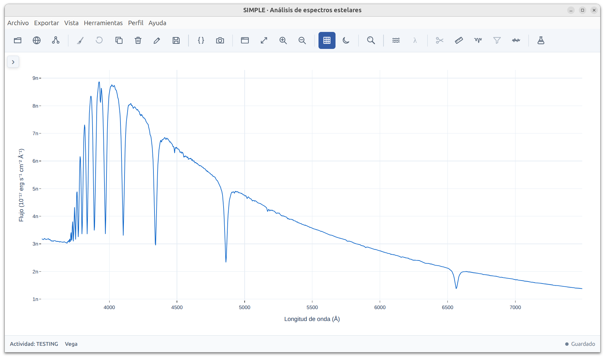

SIMPLE · Análisis de espectros estelares
Una aplicación minimalista para el estudio de atmósferas estelares.

Noticias
SIMPLE se lanzará durante el mes de marzo de 2026 en su versión 1.0-beta1. Se trata de una aplicación en continuo desarrollo hasta la publicación de la versión final 1.0.
Descarga (versión 1.0-beta1)
Verificación SHA256 (opcional)
Puedes comprobar la integridad de simple.exe, en PowerShell con :Get-FileHash .\SIMPLE.exe -Algorithm SHA256
Compara el resultado con: 907FD329F7FA31153A1C3F2CC68E6A29204595333679F565703C6D087C44EAB5
Guía de acceso rápido
Documentación
Contacto
Email: simplespectra@duck.com